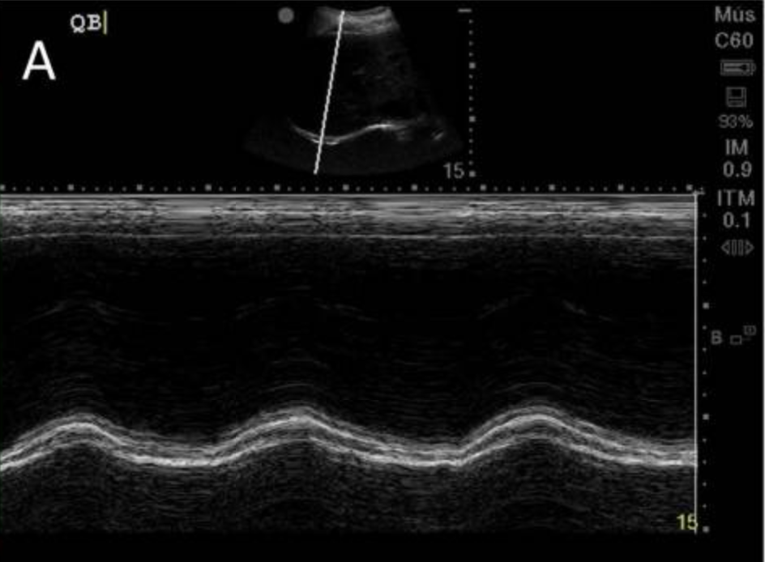

| Parameter | Reported Cutoff Range | Dysfunction | Significance |
|---|---|---|---|
| Tidal excursion (spontaneous) | ~10–14 mm (right)13 | Below cited cutoff | Reduced diaphragm contribution to breathing |
| Maximal excursion (sniff) | ~25 mm (right) | Below cited cutoff | Diaphragm weakness or paralysis |
| DTF (predicting successful extubation) | 20–36% depending on study13,14 | Below cited cutoff (atrophy) or markedly elevated (high effort) | No single universally agreed cutoff exists — see caveat below |
| Diaphragm thickness (end-exp) | 2.2–2.8 mm | <2 mm (atrophy) | Progressive thinning with prolonged MV = VIDD |
Reported optimal thresholds vary meaningfully across studies: some find diaphragmatic excursion cutoffs of 10–13 mm predict successful extubation, others cite 10–14 mm; DTF cutoffs of 20–30% appear in some series and 30–36% in others.13,14 A systematic review by Zambon et al. highlighted this heterogeneity directly.13 Pediatric data are especially mixed — at least one study found no significant association between DTF and extubation success at all.15 Treat any single DTF or excursion number as a guide within a broader clinical assessment, not a strict pass/fail threshold.
Controlled MV is associated with measurable diaphragm atrophy over the first week, with several studies citing a rate on the order of a few percent of thickness lost per day. Serial thickness measurements (every 24–48h) detect VIDD early. Preserving partial diaphragm activity (PSV, SIMV) is thought to mitigate VIDD.

| Parameter | Method | Reported Cutoff Range | Notes |
|---|---|---|---|
| RSBI (f/VT) | T-piece: RR / tidal volume | <105 breaths/min/L | Traditional weaning index; POCUS adds mechanistic context |
| Diaphragm excursion (SBT) | M-mode, subcostal, during T-piece | ~10–14 mm (right)13 | Reduced excursion associated with SBT failure in most series |
| DTF during SBT | Linear probe ZAP during T-piece | 20–36% depending on study13,14 | High DTF = elevated respiratory load — may predict distress post-extubation |
| B-lines pre-extubation | Bilateral anterior LUS before SBT | <3 B-lines per zone | High B-line count = occult cardiogenic edema. Diurese before extubation attempt. |